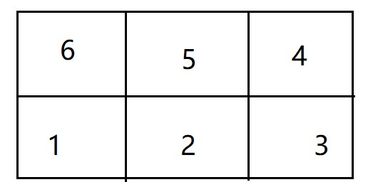

<!DOCTYPE html>


<html lang="zh-CN">
  

    <head>
      <meta charset="utf-8" />
        
      <meta
        name="viewport"
        content="width=device-width, initial-scale=1, maximum-scale=1"
      />
      <title>dp训练 |  jan&#39;s Blog</title>
  <meta name="generator" content="hexo-theme-ayer">
      
      <link rel="shortcut icon" href="/favicon.ico" />
       
<link rel="stylesheet" href="/dist/main.css">

      
<link rel="stylesheet" href="/css/fonts/remixicon.css">

      
<link rel="stylesheet" href="/css/custom.css">
 
      <script src="https://cdn.staticfile.org/pace/1.2.4/pace.min.js"></script>
       
 

      <link
        rel="stylesheet"
        href="https://cdn.jsdelivr.net/npm/@sweetalert2/theme-bulma@5.0.1/bulma.min.css"
      />
      <script src="https://cdn.jsdelivr.net/npm/sweetalert2@11.0.19/dist/sweetalert2.min.js"></script>

      <!-- mermaid -->
      
      <style>
        .swal2-styled.swal2-confirm {
          font-size: 1.6rem;
        }
      </style>
    <link rel="alternate" href="/atom.xml" title="jan's Blog" type="application/atom+xml">
</head>
  </html>
</html>


<body>
  <div id="app">
    
      
    <main class="content on">
      <section class="outer">
  <article
  id="post-dp训练"
  class="article article-type-post"
  itemscope
  itemprop="blogPost"
  data-scroll-reveal
>
  <div class="article-inner">
    
    <header class="article-header">
       
<h1 class="article-title sea-center" style="border-left:0" itemprop="name">
  dp训练
</h1>
 

      
    </header>
     
    <div class="article-meta">
      <a href="/2022/11/09/dp%E8%AE%AD%E7%BB%83/" class="article-date">
  <time datetime="2022-11-09T12:14:59.000Z" itemprop="datePublished">2022-11-09</time>
</a>   
<div class="word_count">
    <span class="post-time">
        <span class="post-meta-item-icon">
            <i class="ri-quill-pen-line"></i>
            <span class="post-meta-item-text"> 字数统计:</span>
            <span class="post-count">3.2k</span>
        </span>
    </span>

    <span class="post-time">
        &nbsp; | &nbsp;
        <span class="post-meta-item-icon">
            <i class="ri-book-open-line"></i>
            <span class="post-meta-item-text"> 阅读时长≈</span>
            <span class="post-count">15 分钟</span>
        </span>
    </span>
</div>
 
    </div>
      
    <div class="tocbot"></div>


  
    <div class="article-entry" itemprop="articleBody">
       
  <p>虽然说是dp训练，但是还是挺多题目没怎么用dp的。</p>
<hr>
<p>22.11.10更新</p>
<h1 id="Making-Towers"><a href="#Making-Towers" class="headerlink" title="Making Towers"></a><a target="_blank" rel="noopener" href="https://codeforces.com/problemset/problem/1706/B">Making Towers</a></h1><p>这题我们可以想一下，如果我们在$(x,y)$的地方放了第$i$方格，那么在$(x,y+1)$处我们可以放置第$i+1$个方格从而构建一个$tower$但是第$i+2$个方格我们无论如何都放不到$(x,y+1)$的位置，然而$i+3$又可以放在$(x,y+1)$的地方，因此我们猜测当第$i$个方格放在$(x,y)$的地方时，$(x,y+1)$只能放置第$j(j&gt;i并且与i奇偶性不同)$个方格，那么如何证明呢？</p>
<p>首先，我们可以知道假如第$j$个方格可以放在第$i$个方格上面时$i$到$j$之间的方格个数一定是偶数：<br><br>也就是$j-i+1$是偶数，进而可以推出$j-i$是奇数，那么假如$i$是奇数，那么$j$就是偶数，$vice\ versa$.</p>
<p>知道了结论后，我们就可以规定$d(i,j)$的状态为，在放置第$i$个方块时，第$j$种颜色的$tower$的大小，然后写出状态转移方程：</p>
<script type="math/tex; mode=display">d(i,j)=max(d(i,j),d(k,j)+1),k\leq i且k\%2\neq i\%2</script><p>在写出了方程后，我们发现空间复杂度太大了，需要进行优化，然后关注$d(i,j)$的第一维，我们并不关心$i$是多少，只关心$i$的奇偶性，因此我们可以对这个进行优化，$0$代表为偶数，$1$代表为奇数：</p>
<script type="math/tex; mode=display">d(0,j)=max(d(0,j),d(1,j)+1)</script><script type="math/tex; mode=display">d(1,j)=max(d(1,j),d(0,j)+1)</script><p>代码：<br><figure class="highlight cpp"><table><tr><td class="gutter"><pre><span class="line">1</span><br><span class="line">2</span><br><span class="line">3</span><br><span class="line">4</span><br><span class="line">5</span><br><span class="line">6</span><br><span class="line">7</span><br><span class="line">8</span><br><span class="line">9</span><br><span class="line">10</span><br><span class="line">11</span><br><span class="line">12</span><br><span class="line">13</span><br><span class="line">14</span><br><span class="line">15</span><br><span class="line">16</span><br><span class="line">17</span><br><span class="line">18</span><br><span class="line">19</span><br><span class="line">20</span><br><span class="line">21</span><br><span class="line">22</span><br><span class="line">23</span><br><span class="line">24</span><br><span class="line">25</span><br><span class="line">26</span><br><span class="line">27</span><br><span class="line">28</span><br><span class="line">29</span><br><span class="line">30</span><br><span class="line">31</span><br><span class="line">32</span><br><span class="line">33</span><br><span class="line">34</span><br><span class="line">35</span><br><span class="line">36</span><br><span class="line">37</span><br><span class="line">38</span><br><span class="line">39</span><br></pre></td><td class="code"><pre><span class="line"><span class="meta">#<span class="keyword">include</span> <span class="string">&lt;iostream&gt;</span></span></span><br><span class="line"><span class="meta">#<span class="keyword">include</span> <span class="string">&lt;algorithm&gt;</span></span></span><br><span class="line"><span class="meta">#<span class="keyword">include</span> <span class="string">&lt;cstring&gt;</span></span></span><br><span class="line"><span class="meta">#<span class="keyword">include</span> <span class="string">&lt;vector&gt;</span></span></span><br><span class="line"><span class="meta">#<span class="keyword">include</span> <span class="string">&lt;string&gt;</span></span></span><br><span class="line"><span class="meta">#<span class="keyword">include</span> <span class="string">&lt;cstring&gt;</span></span></span><br><span class="line"><span class="meta">#<span class="keyword">include</span> <span class="string">&lt;map&gt;</span></span></span><br><span class="line"><span class="meta">#<span class="keyword">include</span> <span class="string">&lt;cmath&gt;</span></span></span><br><span class="line"><span class="meta">#<span class="keyword">include</span> <span class="string">&lt;queue&gt;</span></span></span><br><span class="line"><span class="meta">#<span class="keyword">include</span> <span class="string">&lt;set&gt;</span></span></span><br><span class="line"><span class="meta">#<span class="keyword">define</span> IOS ios_base::sync_with_stdio(0); cin.tie(0);</span></span><br><span class="line"><span class="meta">#<span class="keyword">define</span> INF 0x3f3f3f3f</span></span><br><span class="line"><span class="meta">#<span class="keyword">define</span> mod 1000000007</span></span><br><span class="line"><span class="meta">#<span class="keyword">define</span> PII pair<span class="string">&lt;int,int&gt;</span></span></span><br><span class="line"><span class="meta">#<span class="keyword">define</span> PLL pair<span class="string">&lt;ll,ll&gt;</span></span></span><br><span class="line"><span class="meta">#<span class="keyword">define</span> All(a) a.begin(),a.end()</span></span><br><span class="line"><span class="keyword">typedef</span> <span class="type">long</span> <span class="type">long</span> ll;</span><br><span class="line"><span class="keyword">using</span> <span class="keyword">namespace</span> std;</span><br><span class="line"><span class="type">int</span> t;string s;ll m;<span class="type">int</span> n;ll k;ll x;</span><br><span class="line"><span class="type">int</span> dp[<span class="number">2</span>][<span class="number">100005</span>];</span><br><span class="line"><span class="function"><span class="type">void</span> <span class="title">solve</span><span class="params">()</span></span>&#123;</span><br><span class="line">    cin&gt;&gt;n;</span><br><span class="line">    <span class="built_in">memset</span>(dp,<span class="number">0</span>,<span class="keyword">sizeof</span> dp);</span><br><span class="line">    <span class="function">vector&lt;<span class="type">int</span>&gt; <span class="title">v</span><span class="params">(n+<span class="number">3</span>)</span></span>;</span><br><span class="line">    <span class="keyword">for</span>(<span class="type">int</span> i=<span class="number">1</span>;i&lt;=n;i++)&#123;</span><br><span class="line">        cin&gt;&gt;v[i];</span><br><span class="line">        dp[i%<span class="number">2</span>][v[i]]=<span class="built_in">max</span>(dp[i&amp;<span class="number">1</span>][v[i]],dp[(i&amp;<span class="number">1</span>)^<span class="number">1</span>][v[i]]+<span class="number">1</span>);</span><br><span class="line">    &#125;</span><br><span class="line">    <span class="keyword">for</span>(<span class="type">int</span> i=<span class="number">1</span>;i&lt;=n;i++)&#123;</span><br><span class="line">        cout&lt;&lt;<span class="built_in">max</span>(dp[<span class="number">0</span>][i],dp[<span class="number">1</span>][i])&lt;&lt;<span class="string">&quot; &quot;</span>;</span><br><span class="line">    &#125;cout&lt;&lt;<span class="string">&quot;\n&quot;</span>;</span><br><span class="line"></span><br><span class="line">&#125;</span><br><span class="line"><span class="function"><span class="type">int</span> <span class="title">main</span><span class="params">()</span> </span>&#123;</span><br><span class="line">    IOS</span><br><span class="line">    cin &gt;&gt; t;</span><br><span class="line">    <span class="keyword">while</span> (t--)</span><br><span class="line">        <span class="built_in">solve</span>();</span><br><span class="line">&#125;</span><br></pre></td></tr></table></figure></p>
<h1 id="Yet-Another-Problem-About-Pairs-Satisfying-an-Inequality"><a href="#Yet-Another-Problem-About-Pairs-Satisfying-an-Inequality" class="headerlink" title="Yet Another Problem About Pairs Satisfying an Inequality"></a><a target="_blank" rel="noopener" href="https://codeforces.com/problemset/problem/1703/F">Yet Another Problem About Pairs Satisfying an Inequality</a></h1><p>读完题目我们可以很快判断出，当$a_i \geq i$的时候，这个数可以被丢弃，然后保留数组中 $a_i &lt; i$ 的数。<br>然后考虑只有$ a_i &lt; i $的数组，要想满足题目中$a_i &lt; i &lt; a_j &lt; j$，我们只需要找到数组中满足$i &lt; a_j$的$i,j$即可。<br>由于数组中的下标都是有序的，因此对于每个$a_j$我们只需要进行二分查找然后给$ans$加上下标小于$a_j$的元素个数即可。<br>代码：<br><figure class="highlight cpp"><table><tr><td class="gutter"><pre><span class="line">1</span><br><span class="line">2</span><br><span class="line">3</span><br><span class="line">4</span><br><span class="line">5</span><br><span class="line">6</span><br><span class="line">7</span><br><span class="line">8</span><br><span class="line">9</span><br><span class="line">10</span><br><span class="line">11</span><br><span class="line">12</span><br><span class="line">13</span><br><span class="line">14</span><br><span class="line">15</span><br><span class="line">16</span><br><span class="line">17</span><br><span class="line">18</span><br><span class="line">19</span><br><span class="line">20</span><br><span class="line">21</span><br><span class="line">22</span><br><span class="line">23</span><br><span class="line">24</span><br><span class="line">25</span><br><span class="line">26</span><br><span class="line">27</span><br><span class="line">28</span><br><span class="line">29</span><br><span class="line">30</span><br><span class="line">31</span><br><span class="line">32</span><br><span class="line">33</span><br><span class="line">34</span><br><span class="line">35</span><br><span class="line">36</span><br><span class="line">37</span><br><span class="line">38</span><br><span class="line">39</span><br></pre></td><td class="code"><pre><span class="line"><span class="meta">#<span class="keyword">include</span> <span class="string">&lt;iostream&gt;</span></span></span><br><span class="line"><span class="meta">#<span class="keyword">include</span> <span class="string">&lt;algorithm&gt;</span></span></span><br><span class="line"><span class="meta">#<span class="keyword">include</span> <span class="string">&lt;cstring&gt;</span></span></span><br><span class="line"><span class="meta">#<span class="keyword">include</span> <span class="string">&lt;vector&gt;</span></span></span><br><span class="line"><span class="meta">#<span class="keyword">include</span> <span class="string">&lt;string&gt;</span></span></span><br><span class="line"><span class="meta">#<span class="keyword">include</span> <span class="string">&lt;cstring&gt;</span></span></span><br><span class="line"><span class="meta">#<span class="keyword">include</span> <span class="string">&lt;map&gt;</span></span></span><br><span class="line"><span class="meta">#<span class="keyword">include</span> <span class="string">&lt;cmath&gt;</span></span></span><br><span class="line"><span class="meta">#<span class="keyword">include</span> <span class="string">&lt;queue&gt;</span></span></span><br><span class="line"><span class="meta">#<span class="keyword">include</span> <span class="string">&lt;set&gt;</span></span></span><br><span class="line"><span class="meta">#<span class="keyword">define</span> IOS ios_base::sync_with_stdio(0); cin.tie(0);</span></span><br><span class="line"><span class="meta">#<span class="keyword">define</span> INF 0x3f3f3f3f</span></span><br><span class="line"><span class="meta">#<span class="keyword">define</span> mod 1000000007</span></span><br><span class="line"><span class="meta">#<span class="keyword">define</span> PII pair<span class="string">&lt;int,int&gt;</span></span></span><br><span class="line"><span class="meta">#<span class="keyword">define</span> PLL pair<span class="string">&lt;ll,ll&gt;</span></span></span><br><span class="line"><span class="meta">#<span class="keyword">define</span> All(a) a.begin(),a.end()</span></span><br><span class="line"><span class="keyword">typedef</span> <span class="type">long</span> <span class="type">long</span> ll;</span><br><span class="line"><span class="keyword">using</span> <span class="keyword">namespace</span> std;</span><br><span class="line"><span class="type">int</span> t;string s;ll m;<span class="type">int</span> n;ll k;ll x;</span><br><span class="line"><span class="function"><span class="type">void</span> <span class="title">solve</span><span class="params">()</span></span>&#123;</span><br><span class="line">    cin&gt;&gt;n;</span><br><span class="line">    <span class="function">vector&lt;<span class="type">int</span>&gt; <span class="title">v</span><span class="params">(n+<span class="number">3</span>)</span></span>;</span><br><span class="line">    <span class="keyword">for</span>(<span class="type">int</span> i=<span class="number">1</span>;i&lt;=n;i++)&#123;</span><br><span class="line">        cin&gt;&gt;v[i];</span><br><span class="line">    &#125;</span><br><span class="line">    vector&lt;<span class="type">int</span>&gt; pre;ll ans=<span class="number">0</span>;</span><br><span class="line">    <span class="keyword">for</span>(<span class="type">int</span> i=<span class="number">1</span>;i&lt;=n;i++)&#123;</span><br><span class="line">        <span class="keyword">if</span>(v[i]&gt;=i)<span class="keyword">continue</span>;</span><br><span class="line">        ans+=(ll) (<span class="built_in">lower_bound</span>(<span class="built_in">All</span>(pre),v[i])-pre.<span class="built_in">begin</span>());</span><br><span class="line">        pre.<span class="built_in">push_back</span>(i);</span><br><span class="line">    &#125;</span><br><span class="line">    cout&lt;&lt;ans&lt;&lt;<span class="string">&quot;\n&quot;</span>;</span><br><span class="line">&#125;</span><br><span class="line"><span class="function"><span class="type">int</span> <span class="title">main</span><span class="params">()</span> </span>&#123;</span><br><span class="line">    IOS</span><br><span class="line">    cin &gt;&gt; t;</span><br><span class="line">    <span class="keyword">while</span> (t--)</span><br><span class="line">        <span class="built_in">solve</span>();</span><br><span class="line">&#125;</span><br></pre></td></tr></table></figure><br>本题还有一种做法，维护一个前缀和数组$pref$保存当前的下标$i$前面有多少个数满足$ a_i&lt; i $然后对于每一个$ a_i&lt; i $的数，$ans$加上$pref(a_i-1),(a_i&gt;1)$，表示加上小于当前$a_i$的下标个数。<br>代码：<br><figure class="highlight cpp"><table><tr><td class="gutter"><pre><span class="line">1</span><br><span class="line">2</span><br><span class="line">3</span><br><span class="line">4</span><br><span class="line">5</span><br><span class="line">6</span><br><span class="line">7</span><br><span class="line">8</span><br><span class="line">9</span><br><span class="line">10</span><br><span class="line">11</span><br><span class="line">12</span><br><span class="line">13</span><br><span class="line">14</span><br><span class="line">15</span><br><span class="line">16</span><br><span class="line">17</span><br><span class="line">18</span><br><span class="line">19</span><br><span class="line">20</span><br><span class="line">21</span><br></pre></td><td class="code"><pre><span class="line"><span class="meta">#<span class="keyword">include</span> <span class="string">&lt;bits/stdc++.h&gt;</span></span></span><br><span class="line"><span class="keyword">using</span> <span class="keyword">namespace</span> std;</span><br><span class="line"><span class="type">int</span> t, n, a[<span class="number">200005</span>], pref[<span class="number">200005</span>];</span><br><span class="line"><span class="function"><span class="type">int</span> <span class="title">main</span><span class="params">()</span></span></span><br><span class="line"><span class="function"></span>&#123;</span><br><span class="line">    ios_base::<span class="built_in">sync_with_stdio</span>(<span class="literal">false</span>);</span><br><span class="line">    cin &gt;&gt; t;</span><br><span class="line">    <span class="keyword">while</span> (t--) &#123;</span><br><span class="line">        cin &gt;&gt; n;</span><br><span class="line">        <span class="type">long</span> <span class="type">long</span> ans=<span class="number">0</span>;</span><br><span class="line">        <span class="keyword">for</span> (<span class="type">int</span> i=<span class="number">1</span>; i&lt;=n; i++) &#123;</span><br><span class="line">            cin &gt;&gt; a[i];</span><br><span class="line">            pref[i]=pref[i<span class="number">-1</span>]+(a[i]&lt;i);</span><br><span class="line">            <span class="keyword">if</span> (a[i]&lt;i) &#123;</span><br><span class="line">                ans+=pref[<span class="built_in">max</span>(<span class="number">0</span>, a[i]<span class="number">-1</span>)];</span><br><span class="line">            &#125;</span><br><span class="line">        &#125;</span><br><span class="line">        cout &lt;&lt; ans &lt;&lt; <span class="string">&quot;\n&quot;</span>;</span><br><span class="line">    &#125;</span><br><span class="line">    <span class="keyword">return</span> <span class="number">0</span>;</span><br><span class="line">&#125;</span><br></pre></td></tr></table></figure></p>
<hr>
<p>2022-11-11更新</p>
<h1 id="White-Black-Balanced-Subtrees"><a href="#White-Black-Balanced-Subtrees" class="headerlink" title="White-Black Balanced Subtrees"></a><a target="_blank" rel="noopener" href="https://codeforces.com/problemset/problem/1676/G">White-Black Balanced Subtrees</a></h1><p>这个题目第一要点是建树，对于这种树一般采用二维数组来存储，第$i$个一维数组存储第$i$个节点的子节点。<br>建好树以后，我们来考虑如何如何找出每一个平衡的子树，我们发现，除了叶子节点外，每个子树的黑白节点的数量是由每个子树的子树的黑白节点以及根节点构成的，由此递归定义，我们可以推导出递归的函数或者动态规划的转移，这题我们采用动态规划。<br>我们可以先根据每个节点的黑白，来初始化以这个节点为根的子树黑白节点数量，然后从叶子节点开始向上向根部更新黑白子节点的数量。<br>转移方程：</p>
<script type="math/tex; mode=display">dp[i].b=dp[i].b+ \sum dp[k].b (k为与i节点有边的子节点)</script><script type="math/tex; mode=display">dp[i].w=dp[i].w+ \sum dp[k].w (k为与i节点有边的子节点)</script><p>仅当$dp[i].b=dp[i].w$时有一个平衡树。<br>代码：<br><figure class="highlight cpp"><table><tr><td class="gutter"><pre><span class="line">1</span><br><span class="line">2</span><br><span class="line">3</span><br><span class="line">4</span><br><span class="line">5</span><br><span class="line">6</span><br><span class="line">7</span><br><span class="line">8</span><br><span class="line">9</span><br><span class="line">10</span><br><span class="line">11</span><br><span class="line">12</span><br><span class="line">13</span><br><span class="line">14</span><br><span class="line">15</span><br><span class="line">16</span><br><span class="line">17</span><br><span class="line">18</span><br><span class="line">19</span><br><span class="line">20</span><br><span class="line">21</span><br><span class="line">22</span><br><span class="line">23</span><br><span class="line">24</span><br><span class="line">25</span><br><span class="line">26</span><br><span class="line">27</span><br><span class="line">28</span><br><span class="line">29</span><br><span class="line">30</span><br><span class="line">31</span><br><span class="line">32</span><br><span class="line">33</span><br><span class="line">34</span><br><span class="line">35</span><br><span class="line">36</span><br><span class="line">37</span><br><span class="line">38</span><br><span class="line">39</span><br><span class="line">40</span><br><span class="line">41</span><br><span class="line">42</span><br><span class="line">43</span><br><span class="line">44</span><br><span class="line">45</span><br><span class="line">46</span><br><span class="line">47</span><br><span class="line">48</span><br><span class="line">49</span><br><span class="line">50</span><br><span class="line">51</span><br><span class="line">52</span><br><span class="line">53</span><br></pre></td><td class="code"><pre><span class="line"><span class="meta">#<span class="keyword">include</span> <span class="string">&lt;iostream&gt;</span></span></span><br><span class="line"><span class="meta">#<span class="keyword">include</span> <span class="string">&lt;algorithm&gt;</span></span></span><br><span class="line"><span class="meta">#<span class="keyword">include</span> <span class="string">&lt;cstring&gt;</span></span></span><br><span class="line"><span class="meta">#<span class="keyword">include</span> <span class="string">&lt;vector&gt;</span></span></span><br><span class="line"><span class="meta">#<span class="keyword">include</span> <span class="string">&lt;string&gt;</span></span></span><br><span class="line"><span class="meta">#<span class="keyword">include</span> <span class="string">&lt;cstring&gt;</span></span></span><br><span class="line"><span class="meta">#<span class="keyword">include</span> <span class="string">&lt;map&gt;</span></span></span><br><span class="line"><span class="meta">#<span class="keyword">include</span> <span class="string">&lt;cmath&gt;</span></span></span><br><span class="line"><span class="meta">#<span class="keyword">include</span> <span class="string">&lt;queue&gt;</span></span></span><br><span class="line"><span class="meta">#<span class="keyword">include</span> <span class="string">&lt;set&gt;</span></span></span><br><span class="line"><span class="meta">#<span class="keyword">define</span> IOS ios_base::sync_with_stdio(0); cin.tie(0);</span></span><br><span class="line"><span class="meta">#<span class="keyword">define</span> INF 0x3f3f3f3f</span></span><br><span class="line"><span class="meta">#<span class="keyword">define</span> mod 1000000007</span></span><br><span class="line"><span class="meta">#<span class="keyword">define</span> PII pair<span class="string">&lt;int,int&gt;</span></span></span><br><span class="line"><span class="meta">#<span class="keyword">define</span> PLL pair<span class="string">&lt;ll,ll&gt;</span></span></span><br><span class="line"><span class="meta">#<span class="keyword">define</span> All(a) a.begin(),a.end()</span></span><br><span class="line"><span class="keyword">typedef</span> <span class="type">long</span> <span class="type">long</span> ll;</span><br><span class="line"><span class="keyword">using</span> <span class="keyword">namespace</span> std;</span><br><span class="line"><span class="type">int</span> t;string s;ll m;<span class="type">int</span> n;ll k;ll x;</span><br><span class="line"><span class="keyword">struct</span> <span class="title class_">no</span>&#123;</span><br><span class="line">    <span class="type">int</span> w,b;</span><br><span class="line">    <span class="built_in">no</span>():<span class="built_in">w</span>(<span class="number">0</span>),<span class="built_in">b</span>(<span class="number">0</span>)&#123;&#125;</span><br><span class="line">&#125;;</span><br><span class="line"><span class="function"><span class="type">void</span> <span class="title">solve</span><span class="params">()</span> </span>&#123;</span><br><span class="line">    cin &gt;&gt; n;</span><br><span class="line">    vector&lt;vector&lt;<span class="type">int</span>&gt;&gt; <span class="built_in">v</span>(n+<span class="number">1</span>);</span><br><span class="line">    <span class="function">vector&lt;no&gt; <span class="title">ta</span><span class="params">(n+<span class="number">1</span>)</span></span>;</span><br><span class="line">    <span class="keyword">for</span>(<span class="type">int</span> i=<span class="number">2</span>;i&lt;=n;i++)&#123;</span><br><span class="line">        <span class="type">int</span> xx;cin&gt;&gt;xx;</span><br><span class="line">        v[xx].<span class="built_in">push_back</span>(i);</span><br><span class="line">    &#125;</span><br><span class="line">    cin&gt;&gt;s;s=<span class="string">&#x27;$&#x27;</span>+s;</span><br><span class="line">    <span class="keyword">for</span>(<span class="type">int</span> i=<span class="number">1</span>;i&lt;=n;i++)&#123;</span><br><span class="line">        <span class="keyword">if</span>(s[i]==<span class="string">&#x27;W&#x27;</span>)</span><br><span class="line">        ta[i].w=<span class="number">1</span>;</span><br><span class="line">        <span class="keyword">else</span> ta[i].b=<span class="number">1</span>;</span><br><span class="line">    &#125;</span><br><span class="line">    <span class="type">int</span> ans=<span class="number">0</span>;</span><br><span class="line">    <span class="keyword">for</span>(<span class="type">int</span> i=n;i&gt;=<span class="number">1</span>;i--)&#123;</span><br><span class="line">        <span class="keyword">for</span>(<span class="keyword">auto</span> tmp:v[i])&#123;</span><br><span class="line">            ta[i].b+=ta[tmp].b;</span><br><span class="line">            ta[i].w+=ta[tmp].w;</span><br><span class="line">        &#125;</span><br><span class="line">        <span class="keyword">if</span>(ta[i].b==ta[i].w)ans++;</span><br><span class="line">    &#125;</span><br><span class="line">    cout&lt;&lt;ans&lt;&lt;<span class="string">&quot;\n&quot;</span>;</span><br><span class="line">&#125;</span><br><span class="line"><span class="function"><span class="type">int</span> <span class="title">main</span><span class="params">()</span> </span>&#123;</span><br><span class="line">    IOS</span><br><span class="line">    cin &gt;&gt; t;</span><br><span class="line">    <span class="keyword">while</span> (t--)</span><br><span class="line">        <span class="built_in">solve</span>();</span><br><span class="line">&#125;</span><br></pre></td></tr></table></figure></p>
<h1 id="MEX-and-Array"><a href="#MEX-and-Array" class="headerlink" title="MEX and Array"></a><a target="_blank" rel="noopener" href="https://codeforces.com/problemset/problem/1637/B">MEX and Array</a></h1><p>题目的意思就是，求对于数组中的每一个子数组的$cost$总和最大值，其中每个子数组的$cost$由分成的区间个数加上子数组每个区间中没出现的最小数值组成，也就是题目中的：<script type="math/tex">c+\sum Mex(b_i,b_{i+1},\dots,b_{j-1},b_j)\ c是区间个数</script></p>
<p>简单做法：<br>我们先考虑如何将一个数组的$cost$最大化，也就是如何将数组分成多个区间使得$cost$最大化。先假设有一个长度为$m$的数组，假如把它分成$k(k &lt; m)$个区间，此时的$cost$为<script type="math/tex">k+mex</script>如果数组中没有$0$那么有<script type="math/tex">cost=k</script>如果数组中有$0$那么有最大<script type="math/tex">cost=k+mex</script>其中$mex$最大时为$m$此时$k=1$，当$mex=m-1$此时$k=2$，依次类推<script type="math/tex">cost=1+m为最大</script><br>然而，我们发现，如果我们把数组分成$m$个区间，当数组内没有$0$时，$cost$至少为$m$，此时$cost$必定优于$k$，而当数组中有$0$时，$cost$至少为$m+1$(区间数量为$m$，且至少有$1$个区间只有$0$)也必定优于前者。因此，我们可以得出结论，最优解就是把每个子数组分成$m$个区间且每个区间只有一个值。<br><strong>那么我们如何解决题目的问题呢？</strong><br>根据上面的推导，我们可以知道问题的关键就是子数组中$0$的个数以及数组的子数组个数。<br>我们根据小学就会的组合知识可以得到子数组个数能表示成：</p>
<script type="math/tex; mode=display">n\times 1+(n-1)\times 2+\dots +2 \times (n-1)+1\times n</script><p>我们可以用循环迭代算出上式。然后我们还发现，对于每一个$0$，我们可以发现它对$cost$产生的贡献就是它所参与的子数组个数，也就是上式的对应项的值。<br>例如第$i$个元素是$0$，那么产生的贡献就是上式的第$i$项$(n-i+1)\times i$</p>
<p>代码：<br><figure class="highlight cpp"><table><tr><td class="gutter"><pre><span class="line">1</span><br><span class="line">2</span><br><span class="line">3</span><br><span class="line">4</span><br><span class="line">5</span><br><span class="line">6</span><br><span class="line">7</span><br><span class="line">8</span><br><span class="line">9</span><br><span class="line">10</span><br><span class="line">11</span><br><span class="line">12</span><br><span class="line">13</span><br><span class="line">14</span><br><span class="line">15</span><br><span class="line">16</span><br><span class="line">17</span><br><span class="line">18</span><br><span class="line">19</span><br><span class="line">20</span><br><span class="line">21</span><br><span class="line">22</span><br><span class="line">23</span><br><span class="line">24</span><br><span class="line">25</span><br><span class="line">26</span><br><span class="line">27</span><br><span class="line">28</span><br><span class="line">29</span><br><span class="line">30</span><br><span class="line">31</span><br><span class="line">32</span><br><span class="line">33</span><br><span class="line">34</span><br><span class="line">35</span><br><span class="line">36</span><br><span class="line">37</span><br><span class="line">38</span><br><span class="line">39</span><br></pre></td><td class="code"><pre><span class="line"><span class="meta">#<span class="keyword">include</span> <span class="string">&lt;iostream&gt;</span></span></span><br><span class="line"><span class="meta">#<span class="keyword">include</span> <span class="string">&lt;algorithm&gt;</span></span></span><br><span class="line"><span class="meta">#<span class="keyword">include</span> <span class="string">&lt;cstring&gt;</span></span></span><br><span class="line"><span class="meta">#<span class="keyword">include</span> <span class="string">&lt;vector&gt;</span></span></span><br><span class="line"><span class="meta">#<span class="keyword">include</span> <span class="string">&lt;string&gt;</span></span></span><br><span class="line"><span class="meta">#<span class="keyword">include</span> <span class="string">&lt;cstring&gt;</span></span></span><br><span class="line"><span class="meta">#<span class="keyword">include</span> <span class="string">&lt;map&gt;</span></span></span><br><span class="line"><span class="meta">#<span class="keyword">include</span> <span class="string">&lt;cmath&gt;</span></span></span><br><span class="line"><span class="meta">#<span class="keyword">include</span> <span class="string">&lt;queue&gt;</span></span></span><br><span class="line"><span class="meta">#<span class="keyword">include</span> <span class="string">&lt;set&gt;</span></span></span><br><span class="line"><span class="meta">#<span class="keyword">define</span> IOS ios_base::sync_with_stdio(0); cin.tie(0);</span></span><br><span class="line"><span class="meta">#<span class="keyword">define</span> INF 0x3f3f3f3f</span></span><br><span class="line"><span class="meta">#<span class="keyword">define</span> mod 1000000007</span></span><br><span class="line"><span class="meta">#<span class="keyword">define</span> PII pair<span class="string">&lt;int,int&gt;</span></span></span><br><span class="line"><span class="meta">#<span class="keyword">define</span> PLL pair<span class="string">&lt;ll,ll&gt;</span></span></span><br><span class="line"><span class="meta">#<span class="keyword">define</span> All(a) a.begin(),a.end()</span></span><br><span class="line"><span class="keyword">typedef</span> <span class="type">long</span> <span class="type">long</span> ll;</span><br><span class="line"><span class="keyword">using</span> <span class="keyword">namespace</span> std;</span><br><span class="line"><span class="type">int</span> t;string s;ll m;<span class="type">int</span> n;ll k;ll x;</span><br><span class="line"><span class="function"><span class="type">void</span> <span class="title">solve</span><span class="params">()</span> </span>&#123;</span><br><span class="line">    cin &gt;&gt; n;</span><br><span class="line">    <span class="function">vector&lt;<span class="type">int</span>&gt; <span class="title">v</span><span class="params">(n+<span class="number">1</span>)</span></span>;</span><br><span class="line">    <span class="keyword">for</span>(<span class="type">int</span> i=<span class="number">0</span>;i&lt;n;i++)&#123;</span><br><span class="line">        cin&gt;&gt;v[i];</span><br><span class="line">    &#125;<span class="type">int</span> ans=<span class="number">0</span>;</span><br><span class="line">    <span class="keyword">for</span>(<span class="type">int</span> i=<span class="number">0</span>;i&lt;n;i++)&#123;</span><br><span class="line">        ans+=(i+<span class="number">1</span>)*(n-i);</span><br><span class="line">        <span class="keyword">if</span>(v[i]==<span class="number">0</span>)&#123;</span><br><span class="line">            ans+=(i+<span class="number">1</span>)*(n-i);</span><br><span class="line">        &#125;</span><br><span class="line">    &#125;</span><br><span class="line">    cout&lt;&lt;ans&lt;&lt;<span class="string">&quot;\n&quot;</span>;</span><br><span class="line">&#125;</span><br><span class="line"><span class="function"><span class="type">int</span> <span class="title">main</span><span class="params">()</span> </span>&#123;</span><br><span class="line">    IOS</span><br><span class="line">    cin &gt;&gt; t;</span><br><span class="line">    <span class="keyword">while</span> (t--)</span><br><span class="line">        <span class="built_in">solve</span>();</span><br><span class="line">&#125;</span><br></pre></td></tr></table></figure><br>dp做法：O(n^3) 甚至 O(n^4)<br>肯定超时，不想写。</p>
<h1 id="Fun-with-Even-Subarrays"><a href="#Fun-with-Even-Subarrays" class="headerlink" title="Fun with Even Subarrays"></a><a target="_blank" rel="noopener" href="https://codeforces.com/problemset/problem/1631/B">Fun with Even Subarrays</a></h1><p>读完题就知道肯定要将整个数组都变成和最后一个元素一样，因为最后一个元素改变不了。<br>至于怎么变，肯定就是往前找，直到与最后一个数不同的地方，复制一遍，然后再重复操作直到覆盖完整个数组。</p>
<figure class="highlight cpp"><table><tr><td class="gutter"><pre><span class="line">1</span><br><span class="line">2</span><br><span class="line">3</span><br><span class="line">4</span><br><span class="line">5</span><br><span class="line">6</span><br><span class="line">7</span><br><span class="line">8</span><br><span class="line">9</span><br><span class="line">10</span><br><span class="line">11</span><br><span class="line">12</span><br><span class="line">13</span><br><span class="line">14</span><br><span class="line">15</span><br><span class="line">16</span><br><span class="line">17</span><br><span class="line">18</span><br><span class="line">19</span><br><span class="line">20</span><br><span class="line">21</span><br><span class="line">22</span><br><span class="line">23</span><br><span class="line">24</span><br><span class="line">25</span><br><span class="line">26</span><br><span class="line">27</span><br><span class="line">28</span><br><span class="line">29</span><br><span class="line">30</span><br><span class="line">31</span><br><span class="line">32</span><br><span class="line">33</span><br><span class="line">34</span><br><span class="line">35</span><br><span class="line">36</span><br><span class="line">37</span><br><span class="line">38</span><br><span class="line">39</span><br><span class="line">40</span><br><span class="line">41</span><br><span class="line">42</span><br><span class="line">43</span><br></pre></td><td class="code"><pre><span class="line"><span class="meta">#<span class="keyword">include</span> <span class="string">&lt;iostream&gt;</span></span></span><br><span class="line"><span class="meta">#<span class="keyword">include</span> <span class="string">&lt;algorithm&gt;</span></span></span><br><span class="line"><span class="meta">#<span class="keyword">include</span> <span class="string">&lt;cstring&gt;</span></span></span><br><span class="line"><span class="meta">#<span class="keyword">include</span> <span class="string">&lt;vector&gt;</span></span></span><br><span class="line"><span class="meta">#<span class="keyword">include</span> <span class="string">&lt;string&gt;</span></span></span><br><span class="line"><span class="meta">#<span class="keyword">include</span> <span class="string">&lt;cstring&gt;</span></span></span><br><span class="line"><span class="meta">#<span class="keyword">include</span> <span class="string">&lt;map&gt;</span></span></span><br><span class="line"><span class="meta">#<span class="keyword">include</span> <span class="string">&lt;cmath&gt;</span></span></span><br><span class="line"><span class="meta">#<span class="keyword">include</span> <span class="string">&lt;queue&gt;</span></span></span><br><span class="line"><span class="meta">#<span class="keyword">include</span> <span class="string">&lt;set&gt;</span></span></span><br><span class="line"><span class="meta">#<span class="keyword">define</span> IOS ios_base::sync_with_stdio(0); cin.tie(0);</span></span><br><span class="line"><span class="meta">#<span class="keyword">define</span> INF 0x3f3f3f3f</span></span><br><span class="line"><span class="meta">#<span class="keyword">define</span> mod 1000000007</span></span><br><span class="line"><span class="meta">#<span class="keyword">define</span> PII pair<span class="string">&lt;int,int&gt;</span></span></span><br><span class="line"><span class="meta">#<span class="keyword">define</span> PLL pair<span class="string">&lt;ll,ll&gt;</span></span></span><br><span class="line"><span class="meta">#<span class="keyword">define</span> All(a) a.begin(),a.end()</span></span><br><span class="line"><span class="keyword">typedef</span> <span class="type">long</span> <span class="type">long</span> ll;</span><br><span class="line"><span class="keyword">using</span> <span class="keyword">namespace</span> std;</span><br><span class="line"><span class="type">int</span> t;string s;ll m;<span class="type">int</span> n;ll k;ll x;</span><br><span class="line"><span class="function"><span class="type">void</span> <span class="title">solve</span><span class="params">()</span> </span>&#123;</span><br><span class="line">    cin &gt;&gt; n;</span><br><span class="line">    <span class="function">vector&lt;<span class="type">int</span>&gt; <span class="title">v</span><span class="params">(n)</span></span>;</span><br><span class="line">    <span class="keyword">for</span>(<span class="type">int</span> i=<span class="number">0</span>;i&lt;n;i++)&#123;</span><br><span class="line">        cin&gt;&gt;v[i];</span><br><span class="line">    &#125;</span><br><span class="line">    <span class="type">int</span> ans=<span class="number">0</span>;</span><br><span class="line">    <span class="built_in">reverse</span>(<span class="built_in">All</span>(v));</span><br><span class="line">    <span class="type">int</span> ind=<span class="number">0</span>;</span><br><span class="line">    <span class="keyword">while</span>(ind&lt;n)&#123;</span><br><span class="line">        <span class="keyword">if</span>(v[ind]==v[<span class="number">0</span>])&#123;</span><br><span class="line">            ind++;<span class="keyword">continue</span>;</span><br><span class="line">        &#125;</span><br><span class="line">        ans++;</span><br><span class="line">        ind*=<span class="number">2</span>;</span><br><span class="line">    &#125;</span><br><span class="line">    cout&lt;&lt;ans&lt;&lt;<span class="string">&quot;\n&quot;</span>;</span><br><span class="line">&#125;</span><br><span class="line"><span class="function"><span class="type">int</span> <span class="title">main</span><span class="params">()</span> </span>&#123;</span><br><span class="line">    IOS</span><br><span class="line">    cin &gt;&gt; t;</span><br><span class="line">    <span class="keyword">while</span> (t--)</span><br><span class="line">        <span class="built_in">solve</span>();</span><br><span class="line">&#125;</span><br></pre></td></tr></table></figure>
<h1 id="树的距离之和"><a href="#树的距离之和" class="headerlink" title="树的距离之和"></a>树的距离之和</h1><p>给定一棵无根树，假设它有n个节点，节点编号从1到n, 求1-n这n个节点，到其他n-1个节点的距离之和的最大值。</p>
<p>这是一题树形dp的题，无根树的换根dp。<br>先通过第一次dfs把任意一个节点的子节点个数，以及子节点路径和存进dp[i]。<br>然后通过第二个dfs，把每一个节点的路径和，通过dp[i]更新出来。<br>至于建树，还是和前面题的一样，把相邻的存起来，因为要用相邻节点的值进行更新。<br>现在我们看题，节点到其他节点的距离就是以这个节点为根，其他节点的深度，通过第一个dfs把所有节点的深度之和存进$dp[1]$，就是以节点$1$为根。<br>然后如何通过$1$去更新其他节点？<br>我们发现，对于$1$的子节点$i$:<script type="math/tex">dp[i]=dp[1]+(n-nn[i])-nn[i]</script><br>其中$nn[i]$是以$i$为根的子树节点个数<br>然后推广到以$now$为父亲的子节点$cur$的更新:</p>
<script type="math/tex; mode=display">dp[cur]=dp[now]+(n-nn[cur])-nn[cur]</script><p>代码：</p>
<figure class="highlight cpp"><table><tr><td class="gutter"><pre><span class="line">1</span><br><span class="line">2</span><br><span class="line">3</span><br><span class="line">4</span><br><span class="line">5</span><br><span class="line">6</span><br><span class="line">7</span><br><span class="line">8</span><br><span class="line">9</span><br><span class="line">10</span><br><span class="line">11</span><br><span class="line">12</span><br><span class="line">13</span><br><span class="line">14</span><br><span class="line">15</span><br><span class="line">16</span><br><span class="line">17</span><br><span class="line">18</span><br><span class="line">19</span><br><span class="line">20</span><br><span class="line">21</span><br><span class="line">22</span><br><span class="line">23</span><br><span class="line">24</span><br><span class="line">25</span><br><span class="line">26</span><br><span class="line">27</span><br><span class="line">28</span><br><span class="line">29</span><br><span class="line">30</span><br><span class="line">31</span><br><span class="line">32</span><br><span class="line">33</span><br><span class="line">34</span><br><span class="line">35</span><br><span class="line">36</span><br><span class="line">37</span><br><span class="line">38</span><br><span class="line">39</span><br><span class="line">40</span><br><span class="line">41</span><br><span class="line">42</span><br><span class="line">43</span><br><span class="line">44</span><br><span class="line">45</span><br><span class="line">46</span><br><span class="line">47</span><br><span class="line">48</span><br><span class="line">49</span><br><span class="line">50</span><br><span class="line">51</span><br><span class="line">52</span><br><span class="line">53</span><br><span class="line">54</span><br><span class="line">55</span><br><span class="line">56</span><br><span class="line">57</span><br><span class="line">58</span><br><span class="line">59</span><br><span class="line">60</span><br><span class="line">61</span><br><span class="line">62</span><br><span class="line">63</span><br><span class="line">64</span><br><span class="line">65</span><br><span class="line">66</span><br></pre></td><td class="code"><pre><span class="line"><span class="meta">#<span class="keyword">include</span> <span class="string">&lt;iostream&gt;</span></span></span><br><span class="line"><span class="meta">#<span class="keyword">include</span> <span class="string">&lt;algorithm&gt;</span></span></span><br><span class="line"><span class="meta">#<span class="keyword">include</span> <span class="string">&lt;cstring&gt;</span></span></span><br><span class="line"><span class="meta">#<span class="keyword">include</span> <span class="string">&lt;vector&gt;</span></span></span><br><span class="line"><span class="meta">#<span class="keyword">include</span> <span class="string">&lt;string&gt;</span></span></span><br><span class="line"><span class="meta">#<span class="keyword">include</span> <span class="string">&lt;cstring&gt;</span></span></span><br><span class="line"><span class="meta">#<span class="keyword">include</span> <span class="string">&lt;map&gt;</span></span></span><br><span class="line"><span class="meta">#<span class="keyword">include</span> <span class="string">&lt;cmath&gt;</span></span></span><br><span class="line"><span class="meta">#<span class="keyword">include</span> <span class="string">&lt;queue&gt;</span></span></span><br><span class="line"><span class="meta">#<span class="keyword">include</span> <span class="string">&lt;set&gt;</span></span></span><br><span class="line"><span class="meta">#<span class="keyword">define</span> IOS ios_base::sync_with_stdio(0); cin.tie(0);</span></span><br><span class="line"><span class="meta">#<span class="keyword">define</span> INF 0x3f3f3f3f</span></span><br><span class="line"><span class="meta">#<span class="keyword">define</span> MAX 100005</span></span><br><span class="line">vector&lt;ll&gt; d[MAX];</span><br><span class="line">ll dp[MAX];</span><br><span class="line">ll vis[MAX];</span><br><span class="line">ll nn[MAX];</span><br><span class="line">ll n;</span><br><span class="line"><span class="function"><span class="type">void</span> <span class="title">dfs</span><span class="params">(ll r, ll dep)</span></span>&#123;</span><br><span class="line">    ll len = d[r].<span class="built_in">size</span>();</span><br><span class="line">    dp[<span class="number">1</span>] += dep;</span><br><span class="line">    nn[r] = <span class="number">1</span>;</span><br><span class="line">    <span class="keyword">if</span>(len == <span class="number">0</span>)&#123;</span><br><span class="line">        <span class="keyword">return</span> ;</span><br><span class="line">    &#125;</span><br><span class="line">    <span class="keyword">for</span>(ll i = <span class="number">0</span>;i &lt; len;i++)&#123;</span><br><span class="line">        ll cur = d[r][i];</span><br><span class="line">        <span class="keyword">if</span>(!vis[cur])&#123;</span><br><span class="line">            vis[cur] = <span class="number">1</span>;</span><br><span class="line">            <span class="built_in">dfs</span>(cur,dep + <span class="number">1</span>);</span><br><span class="line">            nn[r] += nn[cur];</span><br><span class="line">        &#125;</span><br><span class="line">    &#125;</span><br><span class="line">&#125;</span><br><span class="line"><span class="function"><span class="type">void</span> <span class="title">dfs1</span><span class="params">(ll now)</span></span>&#123;</span><br><span class="line">    ll len = d[now].<span class="built_in">size</span>();</span><br><span class="line">    <span class="keyword">if</span>(len == <span class="number">0</span>)&#123;</span><br><span class="line">        <span class="keyword">return</span> ;</span><br><span class="line">    &#125;</span><br><span class="line">    <span class="keyword">for</span>(ll i = <span class="number">0</span>;i &lt; len;i++)&#123;</span><br><span class="line">        ll cur = d[now][i];</span><br><span class="line">        <span class="keyword">if</span>(!vis[cur])&#123;</span><br><span class="line">            vis[cur] = <span class="number">1</span>;</span><br><span class="line">            dp[cur] = dp[now] + (n - nn[cur]) - nn[cur];</span><br><span class="line">            <span class="built_in">dfs1</span>(cur);</span><br><span class="line">        &#125;</span><br><span class="line">    &#125;</span><br><span class="line">&#125;</span><br><span class="line"><span class="function"><span class="type">int</span> <span class="title">main</span><span class="params">()</span></span>&#123;</span><br><span class="line">    cin&gt;&gt;n;</span><br><span class="line">    <span class="keyword">for</span>(<span class="type">int</span> i=<span class="number">1</span>;i&lt;=n<span class="number">-1</span>;i++)&#123;</span><br><span class="line">        <span class="type">int</span> x,y;</span><br><span class="line">        cin&gt;&gt;x&gt;&gt;y;</span><br><span class="line">        d[x].<span class="built_in">push_back</span>(y);d[y].<span class="built_in">push_back</span>(x);</span><br><span class="line">    &#125;</span><br><span class="line">    vis[<span class="number">1</span>]=<span class="number">1</span>;</span><br><span class="line">    <span class="built_in">dfs</span>(<span class="number">1</span>,<span class="number">0</span>);</span><br><span class="line">    <span class="built_in">memset</span>(vis,<span class="number">0</span>,<span class="keyword">sizeof</span> vis);</span><br><span class="line">    vis[<span class="number">1</span>]=<span class="number">1</span>;</span><br><span class="line">    <span class="built_in">dfs1</span>(<span class="number">1</span>);ll maxx=<span class="number">0</span>,ans=<span class="number">0</span>;</span><br><span class="line">    <span class="keyword">for</span>(<span class="type">int</span> i=<span class="number">1</span>;i&lt;=n;i++)&#123;</span><br><span class="line">        <span class="keyword">if</span>(maxx&lt;dp[i])&#123;maxx=dp[i];ans=i;&#125;</span><br><span class="line">    &#125;</span><br><span class="line">    cout&lt;&lt;ans;</span><br><span class="line">&#125;</span><br><span class="line"></span><br></pre></td></tr></table></figure> 
      <!-- reward -->
      
      <div id="reword-out">
        <div id="reward-btn">
          打赏
        </div>
      </div>
      
    </div>
    

    <!-- copyright -->
    
    <div class="declare">
      <ul class="post-copyright">
        <li>
          <i class="ri-copyright-line"></i>
          <strong>版权声明： </strong>
          
          本博客所有文章除特别声明外，著作权归作者所有。转载请注明出处！
          
        </li>
      </ul>
    </div>
    
    <footer class="article-footer">
       
<div class="share-btn">
      <span class="share-sns share-outer">
        <i class="ri-share-forward-line"></i>
        分享
      </span>
      <div class="share-wrap">
        <i class="arrow"></i>
        <div class="share-icons">
          
          <a class="weibo share-sns" href="javascript:;" data-type="weibo">
            <i class="ri-weibo-fill"></i>
          </a>
          <a class="weixin share-sns wxFab" href="javascript:;" data-type="weixin">
            <i class="ri-wechat-fill"></i>
          </a>
          <a class="qq share-sns" href="javascript:;" data-type="qq">
            <i class="ri-qq-fill"></i>
          </a>
          <a class="douban share-sns" href="javascript:;" data-type="douban">
            <i class="ri-douban-line"></i>
          </a>
          <!-- <a class="qzone share-sns" href="javascript:;" data-type="qzone">
            <i class="icon icon-qzone"></i>
          </a> -->
          
          <a class="facebook share-sns" href="javascript:;" data-type="facebook">
            <i class="ri-facebook-circle-fill"></i>
          </a>
          <a class="twitter share-sns" href="javascript:;" data-type="twitter">
            <i class="ri-twitter-fill"></i>
          </a>
          <a class="google share-sns" href="javascript:;" data-type="google">
            <i class="ri-google-fill"></i>
          </a>
        </div>
      </div>
</div>

<div class="wx-share-modal">
    <a class="modal-close" href="javascript:;"><i class="ri-close-circle-line"></i></a>
    <p>扫一扫，分享到微信</p>
    <div class="wx-qrcode">
      
    </div>
</div>

<div id="share-mask"></div>  
    </footer>
  </div>

   
  <nav class="article-nav">
    
      <a href="/2022/11/10/games%E4%B8%93%E9%A2%98/" class="article-nav-link">
        <strong class="article-nav-caption">上一篇</strong>
        <div class="article-nav-title">
          
            games专题
          
        </div>
      </a>
    
    
      <a href="/2022/11/08/CodeTon-round3-div1-div2/" class="article-nav-link">
        <strong class="article-nav-caption">下一篇</strong>
        <div class="article-nav-title">CodeTon round3(div1+div2)</div>
      </a>
    
  </nav>

  
   
  
   
    <script src="https://cdn.staticfile.org/twikoo/1.4.18/twikoo.all.min.js"></script>
    <div id="twikoo" class="twikoo"></div>
    <script>
        twikoo.init({
            envId: ""
        })
    </script>
 
</article>

</section>
      <footer class="footer">
  <div class="outer">
    <ul>
      <li>
        Copyrights &copy;
        2015-2022
        <i class="ri-heart-fill heart_icon"></i> Jan
      </li>
    </ul>
    <ul>
      <li>
        
      </li>
    </ul>
    <ul>
      <li>
        
        
        <span>
  <span><i class="ri-user-3-fill"></i>访问人数:<span id="busuanzi_value_site_uv"></span></span>
  <span class="division">|</span>
  <span><i class="ri-eye-fill"></i>浏览次数:<span id="busuanzi_value_page_pv"></span></span>
</span>
        
      </li>
    </ul>
    <ul>
      
    </ul>
    <ul>
      
    </ul>
    <ul>
      <li>
        <!-- cnzz统计 -->
        
        <script type="text/javascript" src='https://s9.cnzz.com/z_stat.php?id=1278069914&amp;web_id=1278069914'></script>
        
      </li>
    </ul>
  </div>
</footer>    
    </main>
    <div class="float_btns">
      <div class="totop" id="totop">
  <i class="ri-arrow-up-line"></i>
</div>

<div class="todark" id="todark">
  <i class="ri-moon-line"></i>
</div>

    </div>
    <aside class="sidebar on">
      <button class="navbar-toggle"></button>
<nav class="navbar">
  
  <div class="logo">
    <a href="/"></a>
  </div>
  
  <ul class="nav nav-main">
    
    <li class="nav-item">
      <a class="nav-item-link" href="/">主页</a>
    </li>
    
    <li class="nav-item">
      <a class="nav-item-link" href="/archives">归档</a>
    </li>
    
    <li class="nav-item">
      <a class="nav-item-link" href="/categories">分类</a>
    </li>
    
    <li class="nav-item">
      <a class="nav-item-link" href="/tags">标签</a>
    </li>
    
    <li class="nav-item">
      <a class="nav-item-link" href="/tags/%E6%97%85%E8%A1%8C/">旅行</a>
    </li>
    
    <li class="nav-item">
      <a class="nav-item-link" target="_blank" rel="noopener" href="http://shenyu-vip.lofter.com">摄影</a>
    </li>
    
    <li class="nav-item">
      <a class="nav-item-link" href="/friends">友链</a>
    </li>
    
    <li class="nav-item">
      <a class="nav-item-link" href="/2019/about">关于我</a>
    </li>
    
  </ul>
</nav>
<nav class="navbar navbar-bottom">
  <ul class="nav">
    <li class="nav-item">
      
      <a class="nav-item-link nav-item-search"  title="搜索">
        <i class="ri-search-line"></i>
      </a>
      
      
      <a class="nav-item-link" target="_blank" href="/atom.xml" title="RSS Feed">
        <i class="ri-rss-line"></i>
      </a>
      
    </li>
  </ul>
</nav>
<div class="search-form-wrap">
  <div class="local-search local-search-plugin">
  <input type="search" id="local-search-input" class="local-search-input" placeholder="Search...">
  <div id="local-search-result" class="local-search-result"></div>
</div>
</div>
    </aside>
    <div id="mask"></div>

<!-- #reward -->
<div id="reward">
  <span class="close"><i class="ri-close-line"></i></span>
  <p class="reward-p"><i class="ri-cup-line"></i>请我喝杯咖啡吧~</p>
  <div class="reward-box">
    
    
  </div>
</div>
    
<script src="/js/jquery-3.6.0.min.js"></script>
 
<script src="/js/lazyload.min.js"></script>

<!-- Tocbot -->
 
<script src="/js/tocbot.min.js"></script>

<script>
  tocbot.init({
    tocSelector: ".tocbot",
    contentSelector: ".article-entry",
    headingSelector: "h1, h2, h3, h4, h5, h6",
    hasInnerContainers: true,
    scrollSmooth: true,
    scrollContainer: "main",
    positionFixedSelector: ".tocbot",
    positionFixedClass: "is-position-fixed",
    fixedSidebarOffset: "auto",
  });
</script>

<script src="https://cdn.staticfile.org/jquery-modal/0.9.2/jquery.modal.min.js"></script>
<link
  rel="stylesheet"
  href="https://cdn.staticfile.org/jquery-modal/0.9.2/jquery.modal.min.css"
/>
<script src="https://cdn.staticfile.org/justifiedGallery/3.8.1/js/jquery.justifiedGallery.min.js"></script>

<script src="/dist/main.js"></script>

<!-- ImageViewer -->
 <!-- Root element of PhotoSwipe. Must have class pswp. -->
<div class="pswp" tabindex="-1" role="dialog" aria-hidden="true">

    <!-- Background of PhotoSwipe. 
         It's a separate element as animating opacity is faster than rgba(). -->
    <div class="pswp__bg"></div>

    <!-- Slides wrapper with overflow:hidden. -->
    <div class="pswp__scroll-wrap">

        <!-- Container that holds slides. 
            PhotoSwipe keeps only 3 of them in the DOM to save memory.
            Don't modify these 3 pswp__item elements, data is added later on. -->
        <div class="pswp__container">
            <div class="pswp__item"></div>
            <div class="pswp__item"></div>
            <div class="pswp__item"></div>
        </div>

        <!-- Default (PhotoSwipeUI_Default) interface on top of sliding area. Can be changed. -->
        <div class="pswp__ui pswp__ui--hidden">

            <div class="pswp__top-bar">

                <!--  Controls are self-explanatory. Order can be changed. -->

                <div class="pswp__counter"></div>

                <button class="pswp__button pswp__button--close" title="Close (Esc)"></button>

                <button class="pswp__button pswp__button--share" style="display:none" title="Share"></button>

                <button class="pswp__button pswp__button--fs" title="Toggle fullscreen"></button>

                <button class="pswp__button pswp__button--zoom" title="Zoom in/out"></button>

                <!-- Preloader demo http://codepen.io/dimsemenov/pen/yyBWoR -->
                <!-- element will get class pswp__preloader--active when preloader is running -->
                <div class="pswp__preloader">
                    <div class="pswp__preloader__icn">
                        <div class="pswp__preloader__cut">
                            <div class="pswp__preloader__donut"></div>
                        </div>
                    </div>
                </div>
            </div>

            <div class="pswp__share-modal pswp__share-modal--hidden pswp__single-tap">
                <div class="pswp__share-tooltip"></div>
            </div>

            <button class="pswp__button pswp__button--arrow--left" title="Previous (arrow left)">
            </button>

            <button class="pswp__button pswp__button--arrow--right" title="Next (arrow right)">
            </button>

            <div class="pswp__caption">
                <div class="pswp__caption__center"></div>
            </div>

        </div>

    </div>

</div>

<link rel="stylesheet" href="https://cdn.staticfile.org/photoswipe/4.1.3/photoswipe.min.css">
<link rel="stylesheet" href="https://cdn.staticfile.org/photoswipe/4.1.3/default-skin/default-skin.min.css">
<script src="https://cdn.staticfile.org/photoswipe/4.1.3/photoswipe.min.js"></script>
<script src="https://cdn.staticfile.org/photoswipe/4.1.3/photoswipe-ui-default.min.js"></script>

<script>
    function viewer_init() {
        let pswpElement = document.querySelectorAll('.pswp')[0];
        let $imgArr = document.querySelectorAll(('.article-entry img:not(.reward-img)'))

        $imgArr.forEach(($em, i) => {
            $em.onclick = () => {
                // slider展开状态
                // todo: 这样不好，后面改成状态
                if (document.querySelector('.left-col.show')) return
                let items = []
                $imgArr.forEach(($em2, i2) => {
                    let img = $em2.getAttribute('data-idx', i2)
                    let src = $em2.getAttribute('data-target') || $em2.getAttribute('src')
                    let title = $em2.getAttribute('alt')
                    // 获得原图尺寸
                    const image = new Image()
                    image.src = src
                    items.push({
                        src: src,
                        w: image.width || $em2.width,
                        h: image.height || $em2.height,
                        title: title
                    })
                })
                var gallery = new PhotoSwipe(pswpElement, PhotoSwipeUI_Default, items, {
                    index: parseInt(i)
                });
                gallery.init()
            }
        })
    }
    viewer_init()
</script> 
<!-- MathJax -->
 <script type="text/x-mathjax-config">
  MathJax.Hub.Config({
      tex2jax: {
          inlineMath: [ ['$','$'], ["\\(","\\)"]  ],
          processEscapes: true,
          skipTags: ['script', 'noscript', 'style', 'textarea', 'pre', 'code']
      }
  });

  MathJax.Hub.Queue(function() {
      var all = MathJax.Hub.getAllJax(), i;
      for(i=0; i < all.length; i += 1) {
          all[i].SourceElement().parentNode.className += ' has-jax';
      }
  });
</script>

<script src="https://cdn.staticfile.org/mathjax/2.7.7/MathJax.js"></script>
<script src="https://cdn.staticfile.org/mathjax/2.7.7/config/TeX-AMS-MML_HTMLorMML-full.js"></script>
<script>
  var ayerConfig = {
    mathjax: true,
  };
</script>

<!-- Katex -->
 
    
        <link rel="stylesheet" href="https://cdn.staticfile.org/KaTeX/0.15.1/katex.min.css">
        <script src="https://cdn.staticfile.org/KaTeX/0.15.1/katex.min.js"></script>
        <script src="https://cdn.staticfile.org/KaTeX/0.15.1/contrib/auto-render.min.js"></script>
        
            <script src="https://cdn.staticfile.org/KaTeX/0.15.1/contrib/copy-tex.min.js"></script>
            <link rel="stylesheet" href="https://cdn.staticfile.org/KaTeX/0.15.1/contrib/copy-tex.min.css">
        
    
 
<!-- busuanzi  -->
 
<script src="/js/busuanzi-2.3.pure.min.js"></script>
 
<!-- ClickLove -->

<!-- ClickBoom1 -->

<!-- ClickBoom2 -->

<!-- CodeCopy -->
 
<link rel="stylesheet" href="/css/clipboard.css">
 <script src="https://cdn.staticfile.org/clipboard.js/2.0.10/clipboard.min.js"></script>
<script>
  function wait(callback, seconds) {
    var timelag = null;
    timelag = window.setTimeout(callback, seconds);
  }
  !function (e, t, a) {
    var initCopyCode = function(){
      var copyHtml = '';
      copyHtml += '<button class="btn-copy" data-clipboard-snippet="">';
      copyHtml += '<i class="ri-file-copy-2-line"></i><span>COPY</span>';
      copyHtml += '</button>';
      $(".highlight .code pre").before(copyHtml);
      $(".article pre code").before(copyHtml);
      var clipboard = new ClipboardJS('.btn-copy', {
        target: function(trigger) {
          return trigger.nextElementSibling;
        }
      });
      clipboard.on('success', function(e) {
        let $btn = $(e.trigger);
        $btn.addClass('copied');
        let $icon = $($btn.find('i'));
        $icon.removeClass('ri-file-copy-2-line');
        $icon.addClass('ri-checkbox-circle-line');
        let $span = $($btn.find('span'));
        $span[0].innerText = 'COPIED';
        
        wait(function () { // 等待两秒钟后恢复
          $icon.removeClass('ri-checkbox-circle-line');
          $icon.addClass('ri-file-copy-2-line');
          $span[0].innerText = 'COPY';
        }, 2000);
      });
      clipboard.on('error', function(e) {
        e.clearSelection();
        let $btn = $(e.trigger);
        $btn.addClass('copy-failed');
        let $icon = $($btn.find('i'));
        $icon.removeClass('ri-file-copy-2-line');
        $icon.addClass('ri-time-line');
        let $span = $($btn.find('span'));
        $span[0].innerText = 'COPY FAILED';
        
        wait(function () { // 等待两秒钟后恢复
          $icon.removeClass('ri-time-line');
          $icon.addClass('ri-file-copy-2-line');
          $span[0].innerText = 'COPY';
        }, 2000);
      });
    }
    initCopyCode();
  }(window, document);
</script>
 
<!-- CanvasBackground -->
 
<script src="/js/dz.js"></script>
 
<script>
  if (window.mermaid) {
    mermaid.initialize({ theme: "forest" });
  }
</script>


    
    

  </div>
<script type="text/x-mathjax-config">
    MathJax.Hub.Config({
        tex2jax: {
            inlineMath: [ ["$","$"], ["\\(","\\)"] ],
            skipTags: ['script', 'noscript', 'style', 'textarea', 'pre', 'code'],
            processEscapes: true
        }
    });
    MathJax.Hub.Queue(function() {
        var all = MathJax.Hub.getAllJax();
        for (var i = 0; i < all.length; ++i)
            all[i].SourceElement().parentNode.className += ' has-jax';
    });
</script>
<script src="https://cdnjs.cloudflare.com/ajax/libs/mathjax/2.7.1/MathJax.js?config=TeX-MML-AM_CHTML"></script>

</body>

</html>